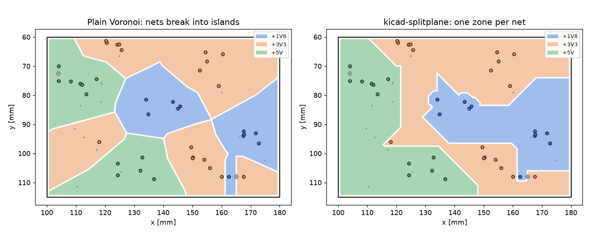
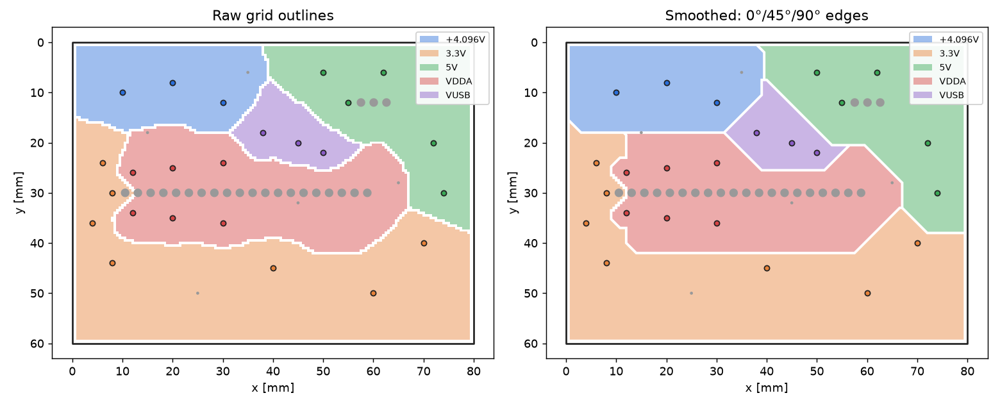

kicad-splitplane
Split a KiCad power layer into one continuous copper zone per voltage, computed from where your vias are. Runs as a KiCad plugin or from the command line.

On a 4-layer board the inner power layer is often shared by several supplies (5V, 3.3V, 1.8V…). Each supply needs its own zone, and each zone has to contain every via of its net, nothing of the other nets, and be one continuous piece of copper. Drawing those outlines by hand is trial and error. This tool does it for you: it connects each net's vias with a path, splits the layer around those paths, and draws the borders with straight 0°/45°/90° edges.
KiCad plugin · Using it in KiCad · Command line · How it works · Good to know · Changes
KiCad plugin
Needs KiCad 9 or newer on Windows, macOS or Linux. The plugin works on the board that is open in the PCB editor and writes the zones straight into it as one undo step.
1. Enable the KiCad API (once)
In KiCad: Preferences → Preferences… → Plugins, tick Enable KiCad API, press OK and restart KiCad.
2. Install the plugin
- Download
kicad-splitplane-<version>-pcm.zipfrom the latest release on GitHub. Don't unzip it. - In the KiCad project manager open Plugin and Content Manager.
- Press Install from File… (bottom left), pick the zip, then press Apply Pending Changes.
The plugin has been submitted to KiCad's official repository. Once it is listed, you will find it in the Plugin and Content Manager under Plugins by searching for kicad-splitplane, and KiCad will offer updates there.
Updating: install the zip of the newer version the same way; it replaces the old one.
3. First run
Open a board in the PCB editor. A new Split power plane button appears in the top toolbar (also under Tools → External Plugins). The first time you press it, KiCad installs the plugin's Python packages (numpy, scipy, shapely, matplotlib) in the background. That takes a minute or two and shows nothing; just wait, then press the button again if no window has appeared.
Using it in KiCad
- Place the power vias first. Each supply needs at least one via or through-hole pad that reaches the plane layer. If you have not placed them yet, tick Use SMD pads as stand-in vias to get a first impression of the split.
- Press Split power plane in the toolbar.
- Choose the Layer to split (e.g.
In2.Cu). - Tick the nets that share this layer. The list shows supply-like nets with their number of vias/THT pads and SMD pads; tick show all nets if yours is missing.
- Press Preview. The split appears on the right, other nets' pads and vias in grey, and the log below. OK: one zone per net means the split is clean.
- Press Apply. The zones are written into the board and filled. Existing zones of the selected nets on that layer are replaced.
- Close the window, check the result and run the Design Rules Checker. Ctrl+Z removes all zones of one run at once.
Settings in the dialog
| Setting | Default | What it does |
|---|---|---|
| Gap between zones | 0.5 mm | Copper gap between neighbouring zones |
| Clearance to edge | 0.5 mm | Distance from the board edge |
| Warn below width | 1.0 mm | Warn where a zone's copper gets narrower than this |
| Grid resolution | 0.5 mm | Routing grid; try 0.3 if a via is reported as trapped |
| Use SMD pads as stand-in vias | off | Preview the split before the power vias exist |
| Smooth 45° outlines | on | Straight 0°/45°/90° borders instead of the raw grid outline |
| Plain Voronoi | off | Skip connecting the vias (faster, may create islands) |
| Keep existing zones | off | Don't replace zones of these nets already on the layer |
| Fill zones after applying | on | Run KiCad's zone fill right after Apply |
What the warnings mean
| Message | What to do |
|---|---|
| via … is trapped by other nets | The via is enclosed by other supplies, so no continuous zone can reach it. Move it to the suggested position, or add a short fanout track. |
| has a neck narrower than … | Somewhere the zone gets thin. Often unavoidable next to dense connectors; otherwise move vias to give it more room. |
| zone runs over a … pad/via | A zone would cover another supply's pad. Usually means two supplies' pads are very close together. |
| pad/via … is not connected to its zone | The zone does not reach this pad once KiCad clears around other copper. |
| another KiCad window is using the KiCad API | Only one KiCad instance can serve plugins. Close the other KiCad windows (e.g. a board opened by double-click while KiCad was already open), open the board again and retry. |
| copper cut into … pieces | A row of other pads (e.g. a pin header) cuts the zone apart. |
Command line
Needs Python 3.9+. Works on Linux, macOS and Windows; you don't need KiCad installed.
git clone https://github.com/atuzlak/kicad-splitplane
cd kicad-splitplane
pip install -r requirements.txt
# which supply nets does the board have?
python kicad_splitplane.py board.kicad_pcb --list-nets
# split In2.Cu between three nets
python kicad_splitplane.py board.kicad_pcb --layer In2.Cu --nets 5V 3.3V VBUSThis writes board_splitplane.kicad_pcb (your board plus the zones) and board_splitplane.png (preview). Your original file is left alone. Open the new board in KiCad and press B to fill the zones.
Options
| Option | Default | What it does |
|---|---|---|
| --layer | In2.Cu | Copper layer to split |
| --nets | Supply nets sharing that layer | |
| --gap | 0.5 mm | Copper gap between neighbouring zones |
| --edge | 0.5 mm | Clearance to the board edge |
| --min-neck | 1.0 mm | Warn where a zone gets narrower than this |
| --res | 0.5 mm | Routing grid; try 0.3 to 0.6 if a via gets trapped |
| --include-smd | off | Treat SMD pads as vias (preview before fanout) |
| --no-smooth | off | Keep the raw grid outlines instead of 0°/45°/90° edges |
| --plain | off | Skip connecting the vias (faster, may create islands) |
| --keep-old | off | Keep existing zones of these nets on the layer |
From Python
import kicad_splitplane as sp
r = sp.process(open("board.kicad_pcb").read(), "In2.Cu", ["5V", "3.3V", "VBUS"])
print(r.log)
sp.render_png(r, "preview.png")How it works
- Read the board. All vias and through-hole pads of the chosen nets on the layer, the board outline, and every other via, pad and hole with its real size. Other nets' copper is an obstacle: a zone has to keep its clearance to it.
- Connect each net. The vias of each net are joined by a tree of 45° paths that keep away from other nets, never squeeze between pins where no copper fits, and avoid narrow passages. All orders of the nets are tried and the best one wins.
- Split. Every pad keeps a ring of its own net. The rest of the layer goes to the nearest path, measured around obstacles. A region grown from one connected path is itself connected, so no net breaks into islands.
- Clean up and check. The borders are straightened into 0°/45°/90° segments, but only where that does not cut a pad or create a neck. Finally the tool estimates what KiCad will actually fill and reports anything that would not work.

Good to know
- If the zones look awkward, move the vias: keep each net's vias together and use short fanout tracks.
- Don't route signals on the neighbouring layer across the gaps between zones. The split plane is their return path.
- Smaller zones get higher priority, so an island inside a bigger zone still fills correctly. Check the order in KiCad's Zone Manager.
- The plugin needs KiCad 9 or newer. The command line works with files from KiCad 7 to 10. Arcs in the board outline are approximated.
Changes
- 0.4.0: pads and vias are handled with their real size; every pad keeps a ring of its own net; other nets' pads, vias and holes are obstacles (no more zones squeezed between header pins); smooth 0°/45°/90° outlines; more precise warnings. Thanks for the feedback from testing it on a 5-supply course project.
- 0.3.1: fixes the plugin window not opening in KiCad.
- 0.3.0: first version of the KiCad plugin.
Feedback and contact
Found a bug, have an idea for an improvement, or interested in working together on this? I'd be glad to hear from you. Write me an email at atuzlak@ethz.ch.
Bug reports and pull requests are also welcome on GitHub.